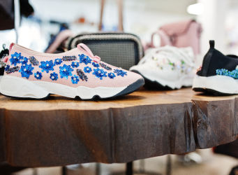

Cách đo size giày tại nhà để chọn đúng đôi vừa chân
Hướng dẫn đo chiều dài và bề ngang bàn chân tại nhà, chọn size theo chân lớn hơn và thử giày đúng thời điểm.
Đọc bài viếtGiày thể thao cho từng nhu cầu
Chọn giày, chọn size và chăm sóc đúng cách

Tiếng Việt
Việt Nam (VND ₫)
Góc chia sẻ ShoeVibe
Hướng dẫn thiết thực để chọn đúng size, phối giày tự tin và chăm sóc giày theo từng chất liệu.
Hướng dẫn đo chiều dài và bề ngang bàn chân tại nhà, chọn size theo chân lớn hơn và thử giày đúng thời điểm.
Đọc bài viếtCác tiêu chí cơ bản khi chọn giày chạy bộ: độ vừa chân, địa hình, cảm giác đệm và cách thử giày.
Đọc bài viếtCách chọn giày tập gym theo bài tập, độ vừa chân, độ bám và độ ổn định; kèm cách thử giày và chăm sóc sau khi sử dụng.
Đọc bài viết
Quy trình làm sạch giày trắng nhẹ nhàng, cách xử lý vết bẩn và phơi khô an toàn theo chất liệu.
Đọc bài viết
Chọn giày đi làm theo độ vừa chân, chất liệu, đế và môi trường công sở để đi lại dễ chịu hơn.
Đọc bài viết
Gợi ý phối sneaker trắng với jeans, quần âu, trang phục màu trung tính và đồ cuối tuần.
Đọc bài viếtPhân biệt cách làm sạch da trơn và da lộn, làm khô và cất giày mà hạn chế ảnh hưởng chất liệu.
Đọc bài viếtCác bước xử lý giày ướt: tháo dây, thấm nước, giữ dáng và hong khô mà không dùng nhiệt cao.
Đọc bài viết
So sánh mục đích sử dụng, độ bám và cảm giác khi mang để chọn đúng loại giày cho hoạt động hằng ngày.
Đọc bài viếtHướng dẫn xác định nhu cầu, so sánh mẫu cùng công năng và chọn giày vừa chân trong mức chi phù hợp.
Đọc bài viết